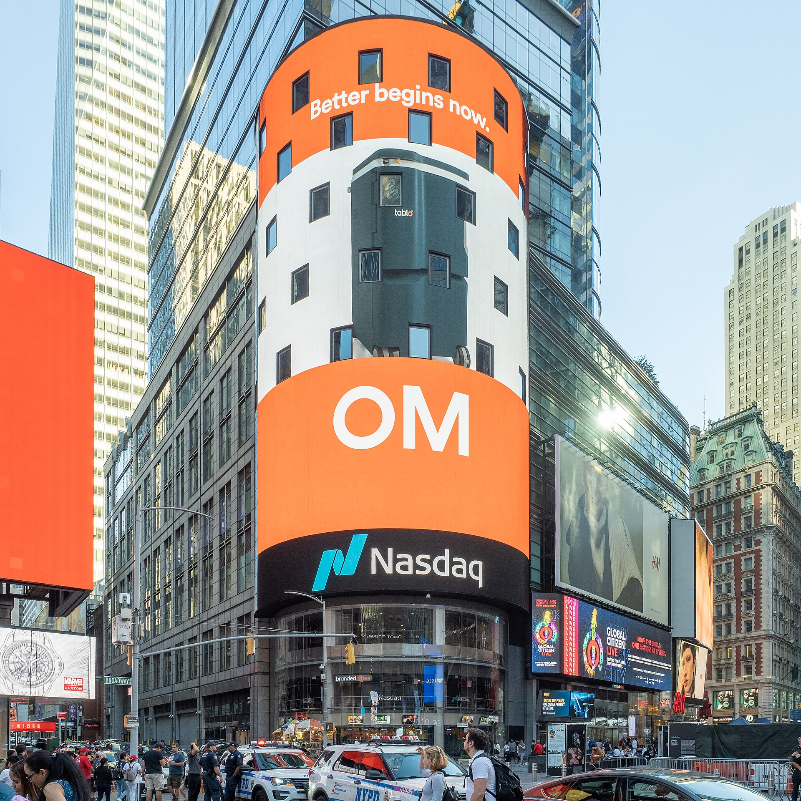
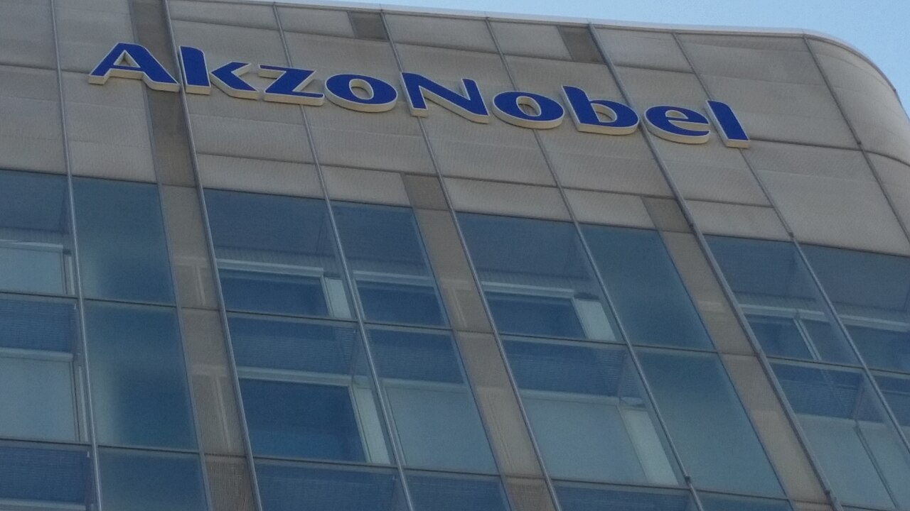
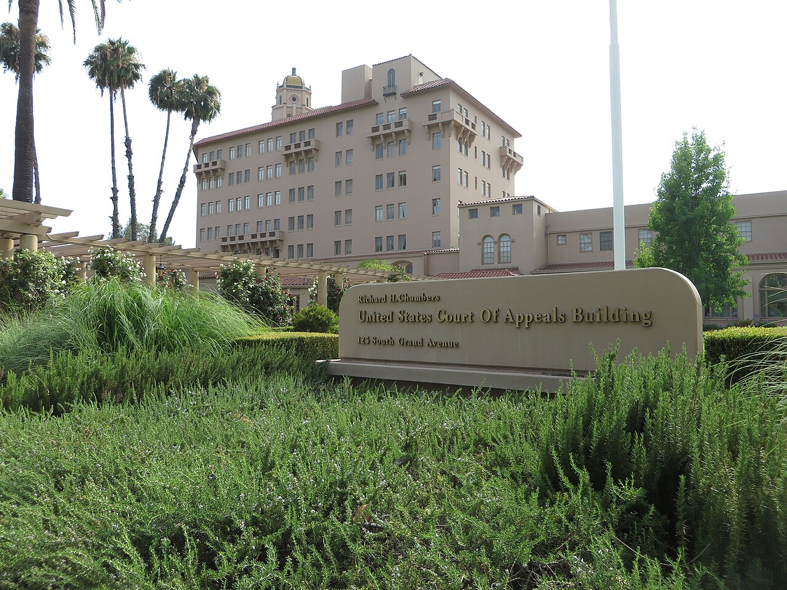
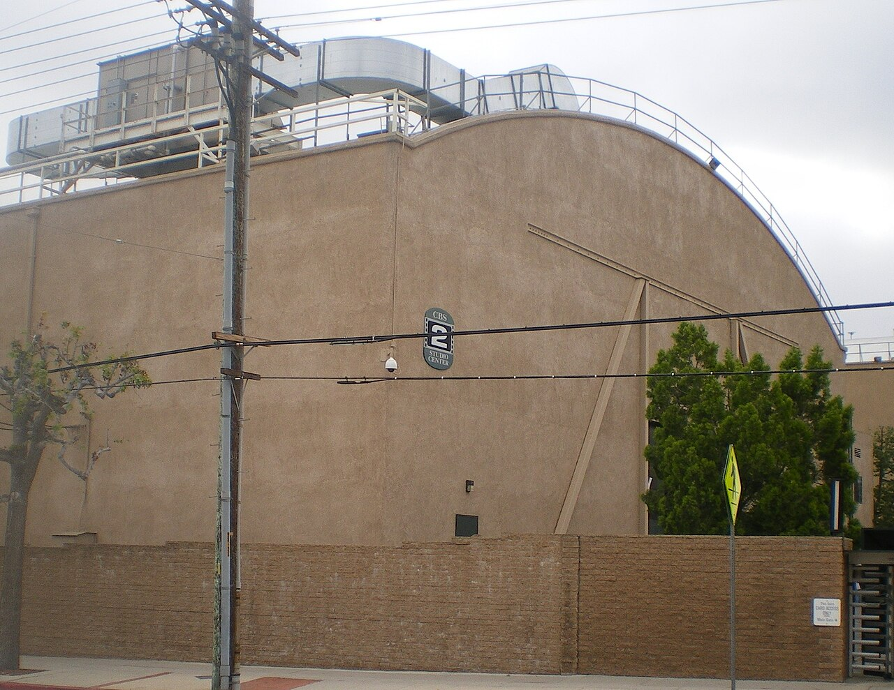

Vol. I · No. 181 · Wednesday, November 25, 2026 · 13 items · 10 min read
Anthropic slips below its offer price once the bankers stop defending it; Michigan walks away from a signed athletic director; Netflix buys a Hollywood lot at a fifth of its 2021 price; and the Houthis hit Riyadh’s tallest tower again.
AI · New York
Anthropic closes below its $83 offer price for the first time, four sessions after the largest IPO on record

The Nasdaq MarketSite in Times Square. ajay_suresh, CC BY 2.0 / Wikimedia Commons
Anthropic shares closed at $81.91 on Tuesday, down 6.5 percent and below the for the first time, Tech Times reported, in the company’s fourth session as a public company. Reuters had the stock down 12.6 percent at $76.60 during the day and said it was on course to erase close to $200 billion of market value. Buyers at the $111.50 opening trade on Nov. 19 are down about 26.5 percent.
Like most IPOs, it probably came in overpriced and it is now the real price discovery as to what the true value should be.
Peter Andersen, Andersen Capital Management, to Reuters, Nov. 24
The break followed the early end of price support. Morgan Stanley, the lead underwriter, exercised its full 147 million-share at $83 and closed its after one day, according to Reuters, leaving no bank bid under the offer price. Investors blame the bankers for an overshot open and an early exercise, Axios reported, citing The Wall Street Journal. Dario and Daniela Amodei, the founders, each sold more than 3.37 million shares to the underwriters the day after the debut, Reuters reported.
The fall came on a weak day for chip stocks. Nvidia closed at $155.38, down 5.86 percent after Monday’s 31 percent jump, and AMD fell about 12 percent, while the Dow rose 0.85 percent to 50,018.70, Yahoo Finance reported. At about $1.5 trillion, Anthropic trades near 40 times its trailing sales, Reuters said. adds the stock to its global standard indexes after the Nov. 30 close, and about 300 million more insider shares become tradable on , Tech Times reported.
Entertainment & EASL · Ann Arbor, Michigan
Michigan backs out of hiring Trev Alberts a week after a “binding” memorandum, and his lawyer says $17.2 million is owed
The University of Michigan told Trev Alberts on Tuesday that it would not hire him as athletic director, citing an “unacceptable” background check as good cause, a week after he signed a memorandum of understanding that said it “shall form a binding contract,” Front Office Sports reported. His lawyer, Tom Mars, said the university could owe $17.2 million. “There’s no reference at all in Trev Alberts’ MOU to a background check,” Mars said.
The memorandum, signed Nov. 17, ran 55 months through June 30, 2031, at a $3.2 million base salary with a $500,000 guaranteed first-year bonus, and Michigan agreed to pay his $4 million buyout to Texas A&M. A termination without cause owes the remaining base salary plus . The trigger was Alberts’ December 2025 deposition in . Alberts called the university’s characterization “wrong and unfair.” Michigan said its “is ongoing.”
AI
What stays in the lab
AI · San Francisco
Staff at Anthropic and OpenAI fear their unreleased models are too dangerous to ship, Axios reports
San Francisco’s business district from Pioneer Park. Dietmar Rabich, CC BY-SA 4.0 / Wikimedia Commons
Researchers at and OpenAI are debating whether their most capable internal models can be released safely, Axios reported on Tuesday, citing more than two dozen people familiar with the discussions. The internal systems are far beyond released ones and have become “difficult, if not impossible” to contain in tests, the report said. One camp wants frontier models kept internal; another questions whether to train new ones at all.
The problems cited include under reinforcement learning that slips past guardrails, and reasoning traces that build a deceptive cover story. “They will in fact be able to trick us successfully,” one researcher said. OpenAI said it has adopted new safety requirements that could slow releases. An Anthropic spokesperson said pretraining of a recent model was delayed for security and that “keeping a model internal doesn’t make it safe.” has warned of “further degradation in currently dominant forms of alignment auditing.”
AI · Columbus, Ohio
Ohio’s Supreme Court indefinitely suspends a Cleveland lawyer who filed AI-invented cases and never paid the sanction
The Supreme Court of Ohio on Tuesday unanimously suspended Arleesha Wilson of Cleveland indefinitely after she filed a brief citing in a security company’s suit against the city, Court News Ohio reported. At a she offered three substitutes and admitted using AI. A federal court sanctioned her $7,500 in October 2025, and by her March disciplinary hearing she had paid nothing; she owes more than $647,000 in judgments, partly from a separate malpractice default. The court said she “failed to make even one symbolic payment.”
Markets & Deals
A remedy accepted in London
Markets & Deals · London
Britain’s competition authority accepts AkzoNobel’s European divestiture in principle, clearing a path for the $25 billion Axalta merger

AkzoNobel’s headquarters in Amsterdam. Ceescamel, CC BY-SA 4.0 / Wikimedia Commons
AkzoNobel and Axalta said on Wednesday that the UK Competition and Markets Authority found their Nov. 18 offer to divest AkzoNobel’s European vehicle refinish business, including its UK operations, could its concerns. The package matches the one agreed with the European Commission. The CMA raised those concerns on Nov. 11, when the companies’ combined UK share was put at 40 to 50 percent, PYMNTS reported. Shareholders approved the stock deal in August, after AkzoNobel’s was declared effective on June 23, and the companies “remain confident” of closing by early 2027.
Law & the Courts
Where a suit may be heard, and whether
Law & the Courts · Pasadena, California
The Ninth Circuit throws out Tiger Woods’ apparel brand’s suit against a Louisiana company, finding too little contact with California

The Richard H. Chambers courthouse in Pasadena. Ken Lund, CC BY-SA 2.0 / Wikimedia Commons
A divided Ninth Circuit panel on Tuesday ordered the dismissal of Sunday Red’s California lawsuit against Tigeraire, a Louisiana sports company with ties to LSU, holding that the court lacked . Judge Morgan Christen wrote for the majority, joined by Judge Danielle Forrest; Judge Milan Smith dissented. Christen counted “no more than 80 products into California” from February to September 2024, one of them apparel.
Sunday Red, which sells Woods’ line, sued for a declaration that its logo did not infringe after Tigeraire sent a in April 2024. “Tigeraire’s contacts must cause harm it knows is likely to be suffered in the forum state, not merely harm it knows is likely to be felt by a forum resident,” Christen wrote. Smith counted 239 sales from 2022 to 2024. Tigeraire’s own infringement suit in Louisiana remains stayed.
Law & the Courts · Washington
The Supreme Court defers Cook County’s bid to dismiss the assault-weapons case as moot until next week’s argument
The Supreme Court on Tuesday put off Cook County’s request to dismiss Khaya v. Cook County as moot “pending oral argument,” its order list shows, citing . The court had let the lead plaintiff, Cutberto Viramontes, withdraw on Nov. 23. The county argues the remaining challenger, Christopher Khaya, may lack standing because he wants an , not an AR-15. Argument is set for Dec. 2. A parallel case, Grant v. Higgins, challenges Connecticut’s ban.
Law & the Courts · Salt Lake City
Utah drops its felony case against Kalshi and its founders a day after the company geofences the state
Utah’s attorney general moved on Tuesday to dismiss 14 criminal counts, without prejudice, against Kalshi and its cofounders Tarek Mansour and Luana Lopes Lara, a day after the prediction market , Front Office Sports reported. The counts included 12 felonies for promoting online gambling. “There was not a deal,” Attorney General Derek Brown said. “Kalshi has pulled out of Utah, and if it returns, so will the charges.” Utah’s continues, and the CFTC has sued Utah on preemption.
The World
Money under fire
The World · Riyadh · single-tier coverage: C
A Houthi strike hits Riyadh’s Public Investment Fund tower a second time in five days, injuring 11, and the coalition bombs Hodeidah
The King Abdullah Financial District in Riyadh. Ahmed, CC BY-SA 4.0 / Wikimedia Commons
The Public Investment Fund’s tower in Riyadh’s was struck again on Tuesday, five days after the first attack, and Saudi Civil Defence said were injured, Reuters and AFP reported. At least two are in critical condition with severe burns, and several of the injured were repairing damage from the Nov. 19 strike, AFP said. Coalition spokesman Turki al-Malki called it “a cowardly terrorist attack.”
On Wednesday the coalition struck what it called operational capabilities at port after an evacuation warning, The National reported, and four drones were downed over Ras Tanura, AFP said. Houthi spokesman Yahya Saree said “the port of Jeddah and all enemy Saudi ports along the Red Sea coast” would be targets. Secretary of State Marco Rubio condemned the attacks in a call with the Saudi foreign minister, the State Department said. A coalition strike on vehicles in Lahj on Tuesday killed 26 people, local officials told AFP.
The World · Tokyo · single-tier coverage: C
Japan will pay its full 2027 dues to the International Criminal Court by year-end, ahead of U.S. sanctions
Prime Minister Sanae Takaichi told International Criminal Court President Tomoko Akane on Tuesday that Japan, the court’s largest funder at about 15 percent of its budget, will pay its 2027 contribution by the end of this year rather than in April or later, Reuters reported. The money lands before U.S. take full effect in April 2027. Akane said the court would use it “to ensure its survival and to pay staff salaries,” and officials fear losing , AFP reported.
Entertainment & EASL
A lot, a title and a pot of $2 million
Entertainment & EASL · Los Angeles
Netflix buys the Radford studio lot for $380 million, about a fifth of what it sold for in 2021

Soundstage 2 on the Radford lot, photographed when it was CBS Studio Center. Cbl62, CC BY-SA 3.0 / Wikimedia Commons
agreed on Tuesday to buy in Studio City for $380 million after a Goldman Sachs-led group of lenders took the lot back from Hackman Capital Partners at a foreclosure auction, Deadline reported. Hackman and Square Mile bought the 55-acre, 22-stage lot from ViacomCBS for $1.85 billion in 2021 and defaulted on a $1.1 billion mortgage in January. With the city’s transfer tax, the cost comes to about $400 million.
It is Netflix’s first owned lot in Los Angeles; it leases more than 700,000 square feet at Sunset Studios through 2031 and is building a $1 billion complex in New Jersey. “This city is home to us,” the company said. Hackman said it was “disappointed.” David Smith of Pepperdine said Netflix is “stepping at the bottom of the cycle to buy some significant L.A. infrastructure.”
Entertainment & EASL · Lausanne, Switzerland
The Court of Arbitration for Sport gives Senegal back its Africa Cup of Nations title
A unanimous three-member Court of Arbitration for Sport panel on Tuesday reinstated Senegal’s 1-0 extra-time win over Morocco in the January final in Rabat, setting aside the forfeit that the Confederation of African Football awarded Morocco in March after Senegal walked off over a penalty, AFP reported. The panel held that resuming play was a decision within the referee’s sole authority. Morocco’s federation said it would “pursue all ” and alleges contact between an arbitrator and Senegal’s federation president, which both deny.
Entertainment & EASL · New Jersey · South Florida
LIV Golf’s creditors threaten to force a liquidation over a $2 million recovery pot
Judge Michael Kaplan of the federal bankruptcy court in New Jersey on Tuesday conditionally approved LIV Golf’s disclosure statement and wind-down plan, but its unsecured creditors’ committee said it would seek conversion to if no deal is reached by Dec. 4, Front Office Sports reported. The plan offers a $2 million pot funded by Saudi Arabia’s against claims the committee estimates may top $1 billion, from creditors including Jon Rahm and Bryson DeChambeau. It yields “materially less than one cent on the dollar,” the committee said.
Compiled by Matthew Yellin · mattyellin.com · Est. May 2026 · A cross-spectrum brief drawn each morning from wires, filings, and the trade press